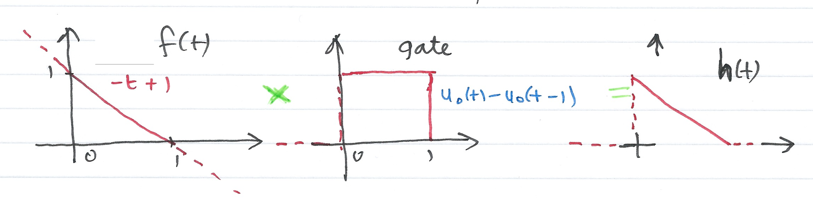

Colophon
An annotatable worksheet for this presentation is available as Worksheet 8.
The source code for this page is content/laplace_transform/5/convolution.ipynb.
You can view the notes for this presentation as a webpage (HTML).
This page is downloadable as a PDF file.
Scope and Background Reading
This section is an introduction to the impulse response of a system and time convolution. Together, these can be used to determine a Linear Time Invariant (LTI) system's time response to any signal.
As we shall see, in the determination of a system's response to a signal input, time convolution involves integration by parts and is a tricky operation. But time convolution becomes multiplication in the Laplace Transform domain, and is much easier to apply.
The material in this presentation and notes is based on Chapter 6 of (Karris, 2012).
- Even and Odd Functions of Time
- Time Convolution
- Graphical Evaluation of the Convolution Integral
- System Response by Laplace
The development requires us to find out if the Dirac delta function ($\delta(t)$) is an even or an odd function of time.
Polynomials with even exponents only, and with or without constants, are even functions.
For example:
$$\cos t = 1 - \frac{t^2}{2!} + \frac{t^4}{4!} - \frac{t^6}{6!} + \ldots$$is even.
Polynomials with odd exponents only, and no constants, are odd functions.
For example:
$$\sin t = t - \frac{t^3}{3!} + \frac{t^5}{5!} - \frac{t^7}{7!} + \ldots$$is odd.
In the following $f_e(t)$ will denote an even function and $f_o(t)$ an odd function.
For an even function $f_e(t)$
$$\int_{-T}^{T}f_e(t) dt = 2 \int_{0}^{T}f_e(t) dt$$For an odd function $f_o(t)$
$$\int_{-T}^{T}f_o(t) dt = 0$$or as an odd function by use of:
$$f_o(t) = \frac{1}{2}\left[f(t)-f(-t)\right]$$Adding these together, an abitrary signal can be represented as
$$f(t) = f_e(t) + f_o(t)$$That is, any function of time can be expressed as the sum of an even and an odd function.
Solution
Let $f(t)$ be an arbitrary function of time that is continous at $t=t_0$. Then by the sifting property of the delta function
$$\int_{-\infty}^{\infty} f(t)\delta(t-t_0) dt = f(t_0)$$and for $t_0 = 0$
$$\int_{-\infty}^{\infty} f(t)\delta(t) dt = f(0)$$Also for an even function $f_e(t)$
$$\int_{-\infty}^{\infty} f_e(t)\delta(t) dt = f_e(0)$$and for an odd function $f_o(t)$
$$\int_{-\infty}^{\infty} f_o(t)\delta(t) dt = f_o(0)$$Even or odd?
An odd function $f_o(t)$ evaluated at $t=0$ is zero, that is $f_o(0) = 0$.
Hence
$$\int_{-\infty}^{\infty} f_o(t)\delta(t) dt = f_o(0) = 0$$Hence the product $f_o(t)\delta(t)$ is odd function of $t$.
Since $f_o(t)$ is odd, $\delta(t)$ must be even because only an even function multiplied by an odd function can result in an odd function.
(Even times even or odd times odd produces an even function. See earlier slide)
We can represent the input-output relationship as a block diagram


The integral
$${\int_{-\infty}^{\infty} u(\tau)h(t-\tau)d\tau}$$or
$${\int_{-\infty}^{\infty} u(t-\tau)h(\tau)d\tau}$$is known as the convolution integral; it states that if we know the impulse response of a system, we can compute its time response to any input by using either of the integrals.
The convolution integral is usually written $u(t)*h(t)$ or $h(t)*u(t)$ where the asterisk ($*$) denotes convolution.
Graphical Evaluation of the Convolution Integral
The convolution integral is most conveniently evaluated by a graphical evaluation. The text book gives three examples (6.4-6.6) which we will demonstrate in class using a graphical visualization tool developed by Teja Muppirala of the Mathworks.
The tool: convolutiondemo.m (see license.txt).
clear all
cd ../matlab/convolution_demo
pwd
format compact
convolutiondemo % ignore warnings
For simplicity, we give the rules for $u(t)$, but the procedure is the same if we reflect and slide $h(t)$
- Substitute $u(t)$ with $u(\tau)$ – this is a simple change of variable. It doesn't change the definition of $u(t)$.
- Reflect $u(\tau)$ about the vertical axis to form $u(-\tau)$
- Slide $u(-\tau)$ to the right a distance $t$ to obtain $u(t-\tau)$
- Multiply the two signals to obtain the product $u(t-\tau)h(\tau)$
- Integrate the product over all $\tau$ from $-\infty$ to $\infty$.
We will do these live in class.
h(t)
The signal $h(t)$ is the straight line $f(t)=-t+1$ but this is defined only between $t = 0$ and $t = 1$. We thus need to gate the function by multiplying it by $u_0(t)-u_0(t-1)$ as illustrated below:

Thus
$$h(t) \Leftrightarrow H(s)$$$$h(t) = (-t + 1)(u_0(t)-u_0(t-1)) = (-t + 1)u_0(t) - (-(t - 1)u_0(t - 1)) = -t u_0(t) + u_0(t) + (t - 1)u_0(t - 1)$$$$-t u_0(t) + u_0(t) + (t - 1)u_0(t - 1) \Leftrightarrow - \frac{1}{s^2} + \frac{1}{s} +\frac{e^{-s}}{s^2}$$$$H(s) = \frac{s + e^{-s} - 1}{s^2}$$u(t)
The input $u(t)$ is the gating function:
$$u(t) = u_0(t)-u_0(t-1)$$so
$$U(s) = \frac{1}{s}-\frac{e^{-s}}{s} = \frac{1 - e^{-s}}{s}$$Summary of result
- For $t < 0$: $$u(t-\tau)h(\tau) = 0$$
- For $t = 0$: $u(t-\tau) = u(-\tau)$ and $u(-\tau)h(\tau) = 0$
- For $0 < t \le 1$: $$h*u = \int_0^t (1)(-\tau + 1)d\tau = \left.\tau - \tau^2/2\right|_0^t = t-t^2/2$$
- For $1 < t \le 2$: $$h*u = \int_{t-1}^1(-\tau + 1)d\tau = \left.\tau - \tau^2/2\right|_{t-1}^{1} = t^2/2-2t+2$$
- For $2 \le t$: $$u(t-\tau)h(\tau) = 0$$
syms t tau
x1=int(exp(-tau),tau,0,t)
x2=int(exp(-tau),tau,t-1,t)
Impulse Response and Transfer Functions
Returning to the example we started with
Then the impulse response of the system $h(t)$ will be given by:
$$\mathcal{L} \left\{ h(t)*\delta(t)\right\} = H(s)\Delta(s)$$Where $H(s)$ be the laplace transform of the impulse response of the system $h(t)$. From properties of the Laplace transform we know that
$$\delta(t) \Leftrightarrow 1$$so that $\Delta(s) = 1$ and
$$h(t)*\delta(t) \Leftrightarrow H(s).1 = H(s)$$A consequence of this is that the transform of the impulse response $h(t)$ of a system with transfer function $H(s)$ is completely defined by the transfer function itself.
Previously we argued that the response of system with impulse response $h(t)$ was given by the convolution integrals:
$$h(t)*u(t) = {\int_{-\infty}^{\infty} u(\tau)h(t-\tau)d\tau} = {\int_{-\infty}^{\infty} u(t-\tau)h(\tau)d\tau}$$Thus the Laplace transform of any system subject to an input $u(t)$ is simply
$$Y(s) = H(s)U(s)$$and
$$y(t) = \mathcal{L}^{-1} \left\{ G(s) U(s) \right\}$$Using tables, solution of a convolution problem by Laplace is usually simpler than using convolution directly.

For the circuit shown above, show that the transfer function of the circuit is:
$$ H(s) = \frac{V_c(s)}{V_s(s)} = \frac{1/RC}{s + 1/RC} $$Hence determine the impulse respone $h(t)$ of the circuit and the response of the capacitor voltage when the input is the unit step function $u_0(t)$ and $v_c(0^-)=0$.
Assume $C=1\; \mathrm{F}$ and $R=1\;\Omega$.
Solution 5b - Step response
$$h(t) = e^{−t}u_0(t) \Leftrightarrow H(s) = \frac{1}{s+1}$$$$u(t) = u_0(t) \Leftrightarrow U(s) = \frac{1}{s}$$$$y(t) = h(t)*u(t) \Leftrightarrow Y(s) = H(s)U(s) = \left(\frac{1}{s+1}\right)\times\left(\frac{1}{s}\right)$$By PFE
$$Y(s) = \frac{r_1}{s+1} + \frac{r_2}{s}$$The residues are $r_1=-1$, $r_2=1$, so
$$Y(s) = -\frac{1}{s+1} + \frac{1}{s} \Leftrightarrow y(t) = \left(1-e^{-t}\right)u_0(t)$$Homework
Verify this result using the convolution integral
$$h(t)*u(t) = {\int_{-\infty}^{\infty} u(\tau)h(t-\tau)d\tau}$$Reference
- Karris, S. T. (2012). Signals and systems with MATLAB computing and Simulink modeling. Orchard Publishing. https://ebookcentral.proquest.com/lib/swansea-ebooks/reader.action?docID=3384197